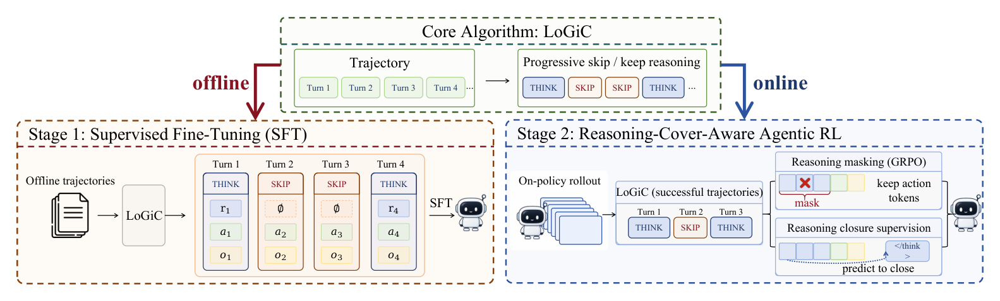
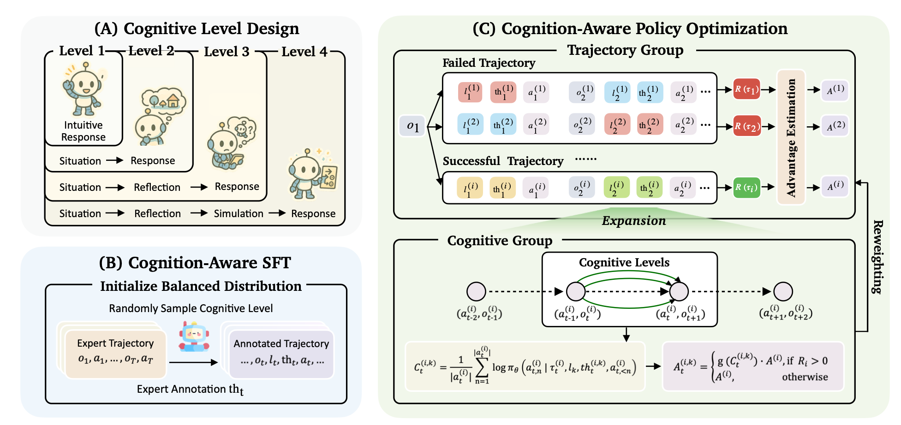
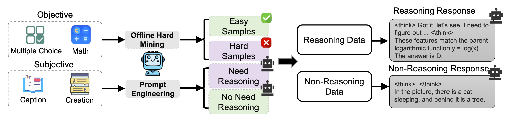
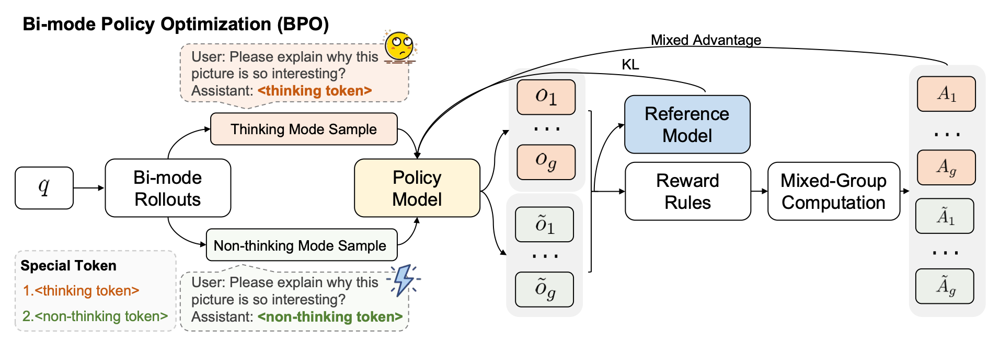
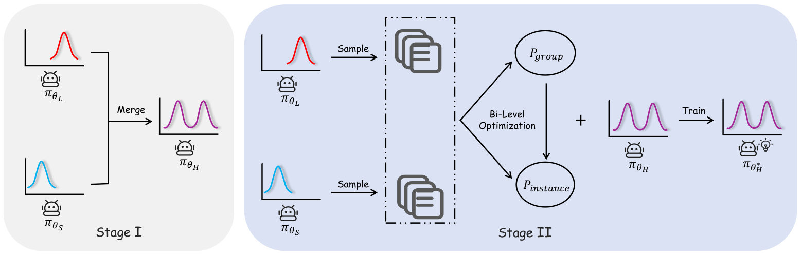
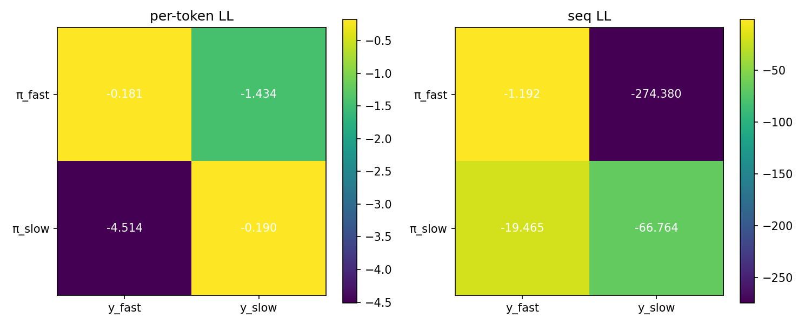

Introduction#
把具备长链推理能力的 LLM 和 VLM 接进机器人闭环（Robot-Use Agent, RUA），最直接的矛盾其实不在“能不能想明白”，而在“来不来得及想”。单轮问答里多吐几百个 thinking token 顶多慢上几秒，可放到连续交互的闭环里，每一步都要读新观测、调技能、等执行，物理环境不会停下来等模型把冗长的 CoT 慢慢写完；反过来，为了压延迟干脆关掉思考，遇到长视界规划、环境扰动或意外失败时又很容易走偏。这两年 LLM、VLM 和桌面 CUA 社区已经探出了不少让模型“该快就快、该慢再慢”的混合推理做法，这篇笔记想探讨的问题很直接：这些面向语言、多模态与桌面任务的 reasoning 加速方法，背后到底抓住了什么机制，又有多大机会迁移到 RUA 里？
沿着这条迁移线索，下文挑出五条代表性路线，依次拆解 RACE、CogRouter、R-4B、STEPWISE、Ada-R1 与 DR-BOLT 六篇工作。其中既有在多轮交互里通过在线 RL 按轮跳过冗余思考或细分认知深度的方案，也有在多模态底座上靠 Bi-Mode Annealing 与均衡 rollout 训出 auto-thinking 的做法；既有不动底座权重、靠外置轻量 monitor 级联大小模型的事件驱动 routing，也有在 offline 阶段通过 Model Merging 或双参考分布对齐把快慢双模收进单模型的尝试。先把它们各自的问题建模与方法细节理清，才能进一步判断哪些机制可以直接搬进机器人闭环，哪些还需要针对物理执行重新改造。
Multi-Turn Step-Level RL Reasoning Control#
RACEAdaptive Reasoning via Cross-Turn Estimation#
Abstract
多轮 agent 通常在每一轮动作前都重写一遍思考，可很多时候前几轮的规划已经把后面几步安排好了；直接在 RL 里惩罚总长度，又会把关键节点上必要的思考一起压扁。RACE 用一个廉价信号判断哪一轮可以不想：删掉这一轮的思考之后，后续参考动作的 log-likelihood 掉得多不多。据此标出可跳过的轮次，再用 Masked GRPO 和显式闭合监督让模型学会按需跳过。
Methodology
多轮轨迹写作 ， 是第 轮的思考。要检验“删掉某轮思考后动作还对不对”，最直接的办法是反复和环境交互 rollout 重采样，代价太高。RACE 发现了一个好用的代理：删掉思考后，参考动作 的 teacher-forcing 平均 log-likelihood 跌得越少，重采样时动作越能复现。于是“找出最少的必要思考”变成了一串前向 log-likelihood 检验。这个算法叫 LoGiC。它保留第一轮全局规划，从第二轮起依次尝试把 换成空闭合符 （直接输出 </think>），然后重新计算当前和之后所有轮次参考动作的 log-likelihood，看最大跌幅是否在容差 之内：
是已经压缩过的 prefix， 是上一步留下的基准 log-likelihood。条件满足，说明已保留的思考和观测足以支撑后续动作，这一轮思考就删掉，基准更新为 ；否则保留它，作为新的推理锚点。每次判断都建立在前面已生效的删减之上，避免了各轮独立裁剪时的误差累积。下图画出了这个逐轮检验的过程。

训练分两步：先用 LoGiC 压缩后的稀疏轨迹做 SFT 冷启动，再做在线 RL。RACE 对成功的在线轨迹运行 LoGiC（失败轨迹按标准 GRPO 处理），标出可跳过轮集合 ，把其中的冗余思考 token 从 policy gradient 里 mask 剔除，防止 GRPO 继续强化多余思考，只对有效 token 集 求和，分母仍用总生成长度来稳定梯度量级；而单靠 mask 并不能教会模型主动停下来，因此在成功轨迹的可跳过轮上再加一项闭合 loss：
是 importance ratio， 是第 条轨迹的全部生成 token， 控制闭合监督的强度。这样一来，“把锚点思考写好”和“跳过惯性思考”被拆成两件事分别优化。

CogRouterThink Fast and Slow via Step-Level Cognitive Depth Adaptation#
Abstract
长视界具身交互任务中，不同步的认知负荷差异悬殊：开局探索与遇错重规划需要深度推演，而开门进房等常规步骤只需本能直答。若只做“想或不想”的二元切换，难以覆盖态势检查与局部反思等中间需求；若直接用 trajectory-level RL 优化多档思考，policy 又会迅速坍缩为全程深思考的认知僵化。CogRouter 借鉴 ACT-R 认知架构设计四级递进认知深度，先以均匀分布的 CoSFT 打破先验偏置，再通过 confidence-aware advantage reweighting 的 CoPO 依据不同深度对动作预测置信度的支撑强弱分配步级 advantage，使单个 LLM agent 在每一步内生选择恰如其分的思考深度。
Methodology
在多轮 POMDP 具身交互中，agent 在每一步 面对历史上下文 依次生成三段结构化输出 ，分别由 <level>、<think> 与 <action> tag 封装。参考认知科学中的 ACT-R 理论，CogRouter 将思考深度细分为四级集合 ： 为本能直答，不展开显式思考直接输出动作； 为态势感知，仅评估当前状态与可执行动作； 为经验整合，在态势评估外明确目标并回顾历史得失； 为战略规划，对多个候选动作做前瞻后果推演后再做抉择。下图概括了四级认知设计以及两阶段训练流程。

直接进入 RL 或沿用专家模型自主挑选的档位标签，都会让 policy 在起步阶段就锁死在特定档位上。因此第一阶段的 CoSFT 刻意回避专家偏置：先收集成功的交互轨迹，再在每一步均匀随机采样一个认知级别 ，提示强模型补全与该级别及真实动作 匹配的思考过程 ，由此在均衡数据集 上最小化 NLL 目标 ，让模型先稳定掌握全部四个档位的生成格式且不带先验偏斜。
冷启动之后，普通 GRPO 把整条轨迹的单一终局 advantage 均匀摊派给所有步骤，无法区分哪一步的深度恰当、哪一步在空耗 token，结果训练很快坍缩向全程 。第二阶段的 CoPO 基于一条核心直觉：恰当的认知深度应当使模型在条件化该思考过程后，对最终正确动作的预测置信度最高。每轮在线 rollout 得到轨迹组后，先按任务成败与格式合法性之积 计算组相对轨迹 advantage 。对于成功轨迹（）的每一步 ，固定当时的观测与已执行动作 ，反事实地用全部四个认知级别重新生成思考过程，构成 cognitive group ，其中 。随后以动作 token 的平均 log-probability 度量各档位的动作预测置信度，并在组内标准化后经温度系数 做 Softmax 重加权：
其中 与 为该步组内置信度的均值与标准差。由于四个档位的权重和恒为 ，它只重新分配该步 advantage 而不改变总量级。更重要的是，该重加权仅施加于成功轨迹，失败轨迹保持原轨迹 advantage 不做扩展，避免模型为逃避高置信犯错的重罚而退化回低置信本能直答：
最终 CoPO 目标在成功轨迹集合 上对扩展 cognitive group 用步级 advantage 优化，在失败轨迹集合 上对原始输出用 优化，并辅以 clipped importance ratio 与参考策略 KL 正则：
测试期仅部署单个策略模型，无需任何外挂 router 或反事实扩展；模型在每一步开头直接自回归吐出 <level> token，在常规执行中自然切回本能直答，在开局探索或遇错受阻时自动抬升认知深度。
Bi-Mode Annealing and Balanced-Rollout RL — Auto-Thinking MLLMs#
R-4BAuto-Thinking MLLM via Bi-Mode Annealing and Bi-Mode Policy Optimization#
Abstract
MLLM 一旦默认展开长链思考，在简单视觉识图或 OCR 查询上会产生大量冗余推理；若依靠手工标注难度或精细调节的 reward shaping 训练自适应切换，又容易在 RL 阶段发生 mode collapse。R-4B 提出两阶段训练范式：先以自动化双启发式数据筛选与 Bi-Mode Annealing 让单模型在同一模板下兼备 thinking 与 non-thinking 两种能力，再通过 Bi-Mode Policy Optimization（BPO）强制每个查询生成对等数量的双模 rollout 并纳入同一 GRPO 混合组对比优化，仅凭简洁的规则 reward 即可激发跨领域通用的 auto-thinking 切换能力。
Methodology
要让单个 MLLM 在通用多模态场景下自主决定是否思考，前提是底座本身已经扎实掌握 thinking 与 non-thinking 两种行为模式。R-4B 的第一阶段围绕 Bi-Mode Annealing 展开，先借助强 MLLM 标注器设计了两套免人工难度标注的数据划分启发式：对于答案可验证的客观题（如数学与选择题），采用基于表现的 offline hard mining，对每题多次采样，仅当全部尝试失败时划入 reasoning 数据，能够答对的简单题划入 non-reasoning 数据；对于难以直接核验正误的主观开放题（如看图描述与开放创作），则通过 prompt engineering 判别其内在复杂度。被划为 reasoning 的样本交由强多模态推理模型补全思维链，再经一致性检验、关键词过滤与去重清洗。
所有退火数据封装进统一的结构化输出模板，避免双模之间出现格式割裂：需要推理的样本写为 <think>reasoning steps</think>answer，适合直答的样本则保留空思考块写为 <think> </think>answer。随后把多领域 thinking 与 non-thinking 精料混合在一起执行单阶段 Bi-Mode Annealing，在 learning rate 衰减期同时把深思考与简洁直答揉进同一组权重，防止只训推理或串行两段训练带来的通用视觉能力遗忘。下图展示了这套自动化双模数据构建流程。

退火完成后得到的基座虽然分别具备双模能力，但直接开启 auto-thinking 推理时会出现明显的 thinking atrophy（思考萎缩）——由于退火数据里直答样本占比更高，模型面对复杂题也倾向偷懒输出空思考块。而直接沿用 vanilla GRPO 做在线 RL 又容易陷入单模偏置：一旦某一种模式在组内暂时占优，另一种模式的 rollout 数量就会迅速萎缩直至坍缩。
为在不引入复杂 reward engineering 的前提下根治 mode collapse，第二阶段提出 Bi-Mode Policy Optimization（BPO）。BPO 在 GRPO 框架内改写采样方式：对每个输入 query ，在前缀显式拼接模式专属 special token（<thinking token> 与 <non-thinking token>），强制策略确定性地生成两组等量回复—— 条 thinking rollout 与 条 non-thinking rollout ，并把全部 条轨迹合并进同一个 mixed group 里，统一依据简洁的数学规则正确性 reward 计算 token-level importance ratio 与组相对 advantage ：
其中 与 分别控制 clip 区间与参考策略 KL 正则强度。通过在同题同组里强制对照两种路径的成败效用，模型清晰分辨出哪些题必须展开思考才能得分、哪些题直答即可拿满回报，且仅凭数学领域的规则 reward 便能将这种难度判别泛化至非数学通用多模态任务。下图描绘了 BPO 的双模采样与混合组优化架构。

推理阶段仅部署训练后的单模型，依据输入末尾附带的触发前缀即可灵活支持三种运行方式：附带 <think>\n\n</think> 强制快答，附带 <think>\n 强制慢想，而仅附带 <think> 时进入 auto-thinking 模式，由模型自己在下一 token 自主决定展开推导还是立刻闭合 </think> 直接作答。
Dynamic Reasoning via Fast–Slow Routing — Event-Driven Cascade#
STEPWISEEvent-Driven Fast–Slow Cascade for Computer-Use Agents#
Abstract
在桌面和网页的长任务里，全程使用前沿大模型太慢也太贵，只用小模型又容易出两种毛病：在原地反复点击的进展停滞，以及漏掉条件却自信宣布完成的静默漂移。STEPWISE 让小模型默认推进，旁边挂两个轻量文本 monitor 扫描最近几步的推理与动作：发现卡死，就让大模型接管一步；发现到达子目标 milestone，就把 checkpoint 前后两张截图交给大模型审核。
Methodology
按固定周期切换大模型效率不高，因为小模型的失败有两种截然不同的样子。一种是外显的，轨迹变长，局部动作反复重复；另一种是隐蔽的，既不报错也不打转，只是漏掉关键条件后提前发出 done。两种失败需要两种探测方式。STEPWISE 把最近 步的推理 与动作 压成纯文本窗口 ，省掉监控端的图像编码，在上面并行运行两个轻量的 ModernBERT 分类器：
Stuck Monitor 故意不看用户指令 ，只盯与任务无关的局部死循环，比如反复点击同一个无效坐标；Milestone Monitor 结合 识别阶段边界，比如提交表单、保存文件或宣布完成。

milestone 概率越过阈值 时，系统把用户指令、上一个 checkpoint 以来的推理动作片段和首尾两张截图 交给大模型 Verifier 。审核通过，checkpoint 更新为当前步，小模型继续；审核不通过，或者卡死概率越过 ，就由大模型亲自生成下一步动作，再交还控制权：
两路信号各管一类失败：Stuck Monitor 拦不住语义跑偏，Milestone Verifier 管不住局部死循环，并联起来才能同时堵住两个口子，而大模型只在这些事件发生时才被调用。
Model Merging for Hybrid Reasoning — Weight Fusion and Bi-Level DPO#
Ada-R1Hybrid-CoT via Bi-Level Adaptive Reasoning Optimization#
Abstract
Long-CoT 模型面对简单题目也会习惯性展开冗长的反思与验算，可如果只在长推理模型自身内部做长度惩罚或剪枝，模型依然困在“先绕一大圈再作答”的分布里，很难真正切回简洁短链路。Ada-R1 改用“先融合、再 bi-level 对齐”的两阶段路线：先将同源的 Long-CoT 模型与 Short-CoT 模型做线性 weight merging，得到同时覆盖两种思维风格的单模型底座；再用 group-level 偏好教它按题目难度决定走长链还是短链，用 instance-level 偏好在选定风格内压缩多余步骤，把快慢双模收进同一组参数里。
Methodology
从单分布 Long-CoT 模型出发做压缩，探索空间天然偏向长链。Ada-R1 的第一阶段先用最直接的线性 weight merging，把 Long-CoT 模型 和 Short-CoT 模型 合成一个混合底座 ：
融合后的策略 同时保留了长链深度探索与短链直答的能力，让后续对齐不必从零塑造另一种输出风格，也不依赖外部 router。下图概括了融合与 bi-level DPO 训练的完整流程。

但单纯融合后的模型并不知道哪道题该长想、哪道题该短答。第二阶段构造两类互补的偏好数据。对训练集中的每道题 ，先分别从原长模型 和短模型 各采样 条解答 与 ，用 Monte Carlo 估计两组风格在这道题上的期望正确率 与 。只有当长链的正确率优势超过边界阈值 时，才把长风格组 选为更优组（），否则偏爱更省算力的短风格组 （），并从两组的笛卡尔积中抽取跨组偏好对构成数据集 ：
选出最优风格组 之后，组内样本的长度仍然参差不齐。因此在 组内继续构造 instance-level 偏好 ，挑出最短的正确解答作为正样本 ，与该组内最长的 条解答配对，把两种风格各自内部的冗余展开再拧干一层。最后把两份数据合并，以融合模型为参考策略 ，通过最大化统一的 DPO 目标一步优化：
group-level 偏好负责“跨风格选档位”，instance-level 偏好负责“同风格去冗余”。两者合在同一套 offline DPO 里，使单个模型就能根据输入复杂度内生切换长短推理。
Dual-Reference Offline Alignment — Boltzmann Projection for Fast–Slow VLMs#
DR-BOLTDual-Reference Offline Optimization for Adaptive VLM Reasoning#
Abstract
VLM 学会长链推理之后，面对简单的视觉识别也会惯性展开冗长反思。想用 offline 数据教单模型该快就快、该慢就慢，难点在于快直答和慢推理分别采自不同的 behavior policy，只拿其中一个当参考，模型就会整体坍缩到全快或全慢。DR-BOLT 把 offline 快慢对齐写成双参考 Boltzmann 投影问题：以快慢两策略的混合分布作为目标参考，在样本权重里补入仅取决于样本来源的校正常数，并让两种模式的 partition function 自然竞争，从而在无需外挂 router 与在线 rollout 的前提下让单个 VLM 内生习得快慢切换。
Methodology
先看单参考 offline 对齐为何会坍缩。面对图文输入 ，快策略 直接输出简短答案 ，慢策略 先写 <think> 推理链再作答 。下图展示了两个 behavior policy 互相打分的 cross log-likelihood 热力图：慢策略在回答开头强烈偏置 <think>，导致快答案在首个 token 即遭遇 prefix 格式壁垒；反过来，快策略对长推理链每个 token 略低的似然在数百个 token 上累乘，使单参考权重比在常见低精度格式下直接下溢归零。只要沿用单一参考策略，另一侧模态就会被指数级压制。

DR-BOLT 的解法是用先验权重 构造目标混合参考分布 ，配合兼顾正确性 、格式合法性 与归一化长度 的标量 reward 。在温度 的 KL 正则目标下，最优策略是 上的 Boltzmann 重加权闭式解 。把总 partition function 按两种模式拆为 与 并对快模态求边缘概率，便自然导出免外挂 router 的配分竞争切换律：
当题目简单、快慢两路都能答对时，快答更小的长度惩罚令 胜出；当视觉关系复杂、快答容易出错时，正确率回报差距令 占优。实际 offline 训练时，候选池按经验采样比例 采自行为混合分布 。对 forward KL 做测度变换会引入行为–参考密度比 ；得益于快慢格式在支撑集上几乎分离（跨模式交叉似然比极小）， 无需再跑双模型前向打分，直接简化为仅取决于样本来源的模态常数近似 。结合 Monte Carlo 混合配分估计 ，模型只需在离线池 上最小化 weighted NLL：
这样既把单模型快慢分配收束为纯 offline weighted SFT，又从分布层面根除了单参考失配引发的模式坍缩。
Synthesis — Composing the Five Hybrid-Reasoning Paradigms#
上述六项工作从五个正交层次切入闭环 agent 的快慢混合推理，在介入时机、训练成本与多模态扩展性上形成清晰互补。在多轮在线 RL 层面，RACE 通过跨轮动作 log-likelihood 覆盖实现二元思考剪枝，CogRouter 则借由四级认知深度与置信度重加权 CoPO 实现更细粒度的步级思考分配；在通用多模态双模训练层面，R-4B 通过 Bi-Mode Annealing 统一双模底座并以强制等量 rollout 的 BPO 仅凭数学规则 reward 激发跨领域 auto-thinking；在外置 routing 层面，STEPWISE 面向桌面长视界任务以轻量事件 monitor 级联大小模型，无需微调底座权重即可按事件唤醒强模型；在单模型 offline 后训练层面，Ada-R1 经由长短参数线性 weight merging 与 bi-level DPO、DR-BOLT 经由双参考 Boltzmann 投影分别从权重空间与分布空间赋予单模型内生的快慢切换能力。五类机制分别作用于步级策略学习、退火与双模采样、外置级联调度、参数融合与分布对齐，共同构成了面向闭环 agent 的高效混合推理技术栈。
References#
When Should Agents Think? Adaptive Reasoning via Cross-Turn Estimation. 2026. arXiv:2610.12061
Think Fast and Slow: Step-Level Cognitive Depth Adaptation for LLM Agents. ICML 2026. arXiv:2602.12662
R-4B: Incentivizing General-Purpose Auto-Thinking Capability in MLLMs via Bi-Mode Annealing and Reinforce Learning. 2025. arXiv:2508.21113
Step-level Optimization for Efficient Computer-use Agents. 2026. arXiv:2604.27151
Ada-R1: Hybrid-CoT via Bi-Level Adaptive Reasoning Optimization. NeurIPS 2025. arXiv:2504.21659
Learning When to Think: Dual-Reference Offline Optimization for Adaptive VLM Reasoning. NeurIPS 2026. arXiv:2611.09154